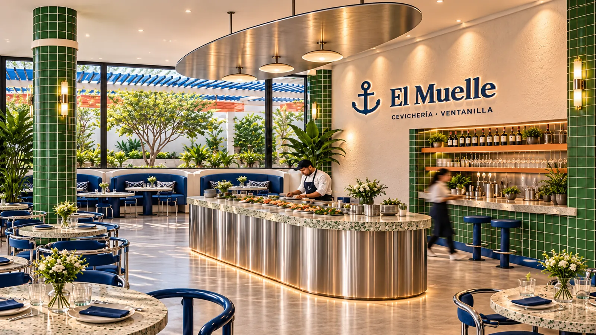
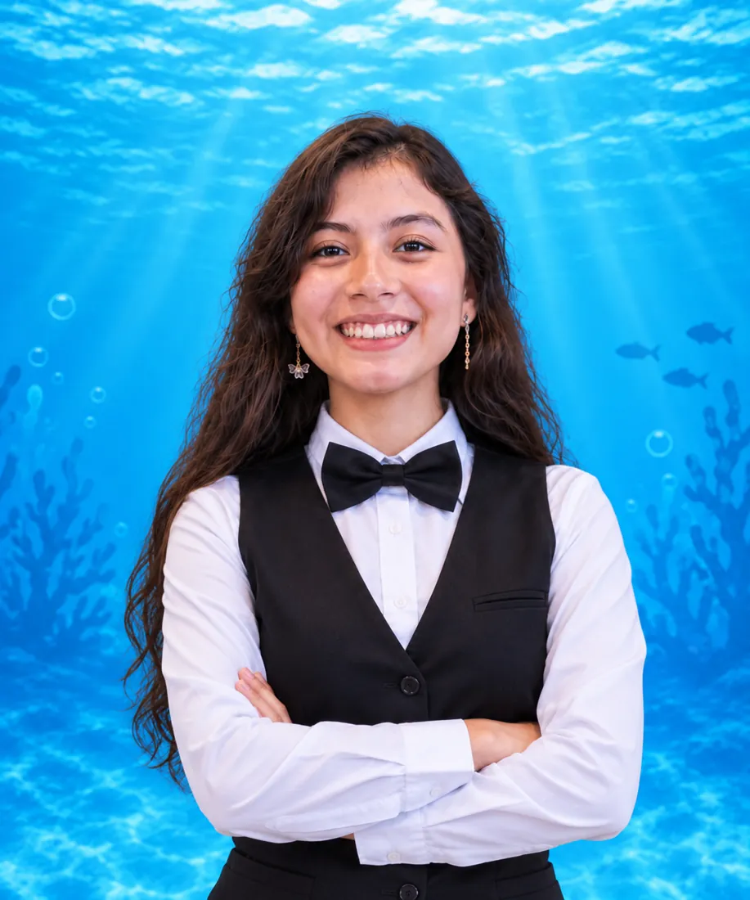

Nuestra historia
Una cevichería que empezó en la cocina de la abuela
De los almuerzos dominicales en familia a un local que hoy recibe a todo el barrio de Ventanilla.
Cómo empezó todo
Del comedor familiar al mostrador
Cada plato de la carta viene de una receta que se probó primero en casa, mucho antes de tener nombre de local.
La receta de la abuela
Todo empezó los domingos, cuando doña Fidela preparaba ceviche para la familia en su casa de Ventanilla.
El primer local
Abrimos un local pequeño, de cuatro mesas, a dos cuadras del terminal pesquero.
La carta crece
Se suman los piqueos, los arroces y la jalea familiar, pensados para compartir en grupo.
Renovamos el local
Ampliamos el salón y abrimos la atención por WhatsApp para reservas y pedidos para llevar.
El Muelle hoy
Seguimos comprando el pescado cada madrugada, igual que el primer domingo de todos.

Quiénes cocinan
El equipo detrás de la barra
Abel Cristobal
Fundador y jefe de cocinaGian Flores
Chef principal
Madeleine
Atención y reservas
Pescado del día
Trato de barrio
Recetas familiares
Precio justo